Titanium Studio 2.0
The latest release of the Appcelerator's integrated development environment for Titanium
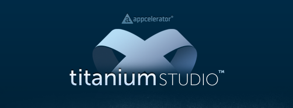
AGENDA
- Titanium Studio Release Overview
- What's New in Titanium Studio 2.0
- Fixes and Enhancements
- Resources / Q&A

RELEASE OVERVIEW
Titanium Studio 2.0 includes substantial feature improvements and increases to developer productivity. This release contains over 400 features, improvements and fixes.
See the full release notes for details
WHATS NEW IN 2.0?
- Appcelerator Cloud Services Support
- Module Management
- Extensible Publishing Platform
- Snippets and Server Views
- Editor Improvements
Appcelerator Cloud Services
- Add ACS cloud services vis Titanium Studio 2.0
- Create a server backend for your app instantly
- Launch and scale your app automatically
- No server coding or administration required
Add ACS To Project
Basic prerequisites
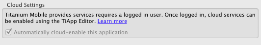
Disabled If Offline
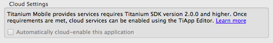
Enabled With SDKs 2.0+ Only
Titanium Studio will auto-generate development and production API keys
Switching Between
Development and Production
- Handled by Titanium Studio automatically
- Deployments to emulators and simulators use your development key
- Deployments to devices use your production key
Removing ACS from a project*
- Switch to the source view of tiapp.xml
- Delete the properties named
acs-* - Save the editor
*You may re-add ACS at any time by following the same steps as adding ACS to an existing project.
MODULE MANAGEMENT


Installing Modules
- Modules can now be installed one of two ways:
- Per project
- Globally
Per-Project Installation
- Open Titanium Studio.
- Expand the project folder in Project Explorer or select the project in the App Explorer menu
- Drag the .zip file from the download location into the current project, placing it at the root of the project. Choose to "Copy Files"
Global Installation
- Locate your Titanium SDK installation location
- Drag the .zip file under the /Titanium folder. As an example, on OS X, the path might look like "/Library/Application Support/Titanium/module.zip"
Using Your Module
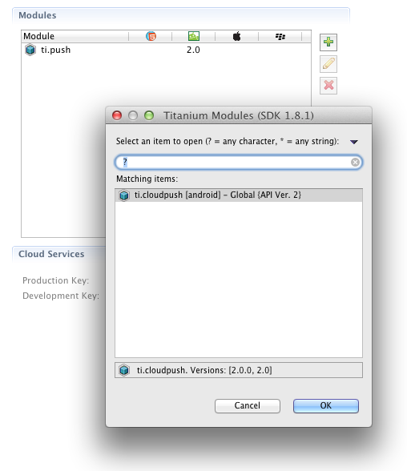tiapp.xml Editor
- Double-click on the tiapp.xml file
- In the right-hand column, click the + to add a new module. It will show you a list of modules available in your global directory and in your project
- Once you've added a module, clicking the pencil (edit) icon allows you to switch versions if there are multiple version available
- If you wish to delete a module, click the x (delete) button to delete the module
EXTENSIBLE PUBLISHING PLATFORM
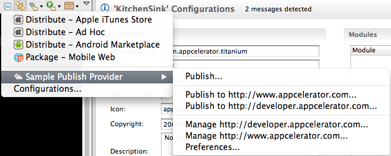Titanium Studio Publishing
- Ability for third-party providers to hook into our publishing workflow
- App stores can register within the interface
- Deployment from inside Titanium Studio to an online location
Publish Plugin Development
- Leverage the power of Eclipse's plugin development workflow to extend Titanium Studio
- Fully customizable UI
- See Adding A Publish Provider for details
Snippets View
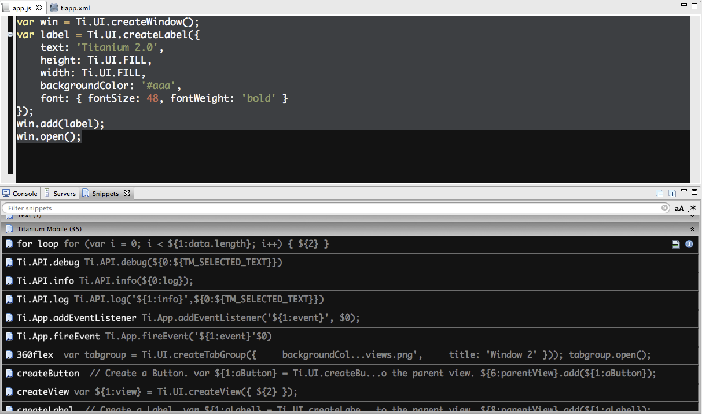Servers View
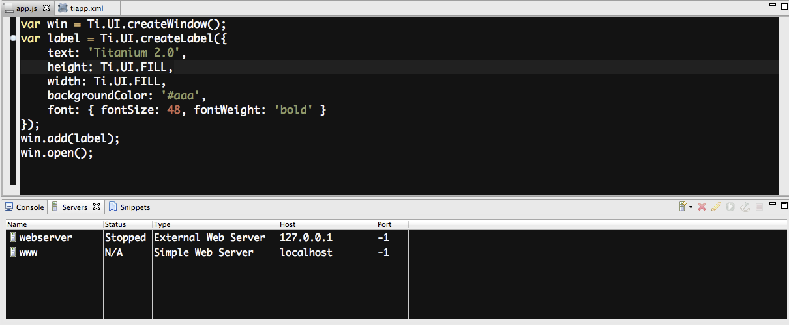Manage development servers within Titanium Studio
Fixes and
Enhancements*
*See the Release Notes for full listing
Content Assist improvements
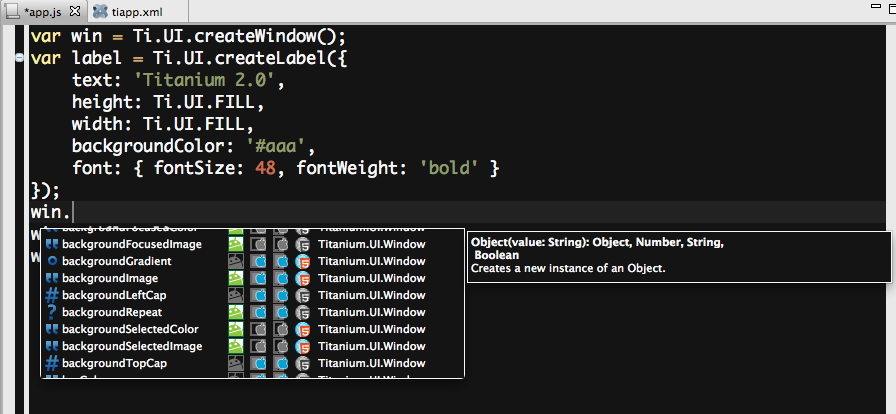Project Validation
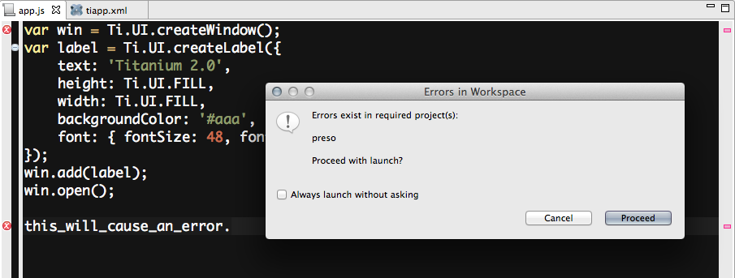
Open Declarations
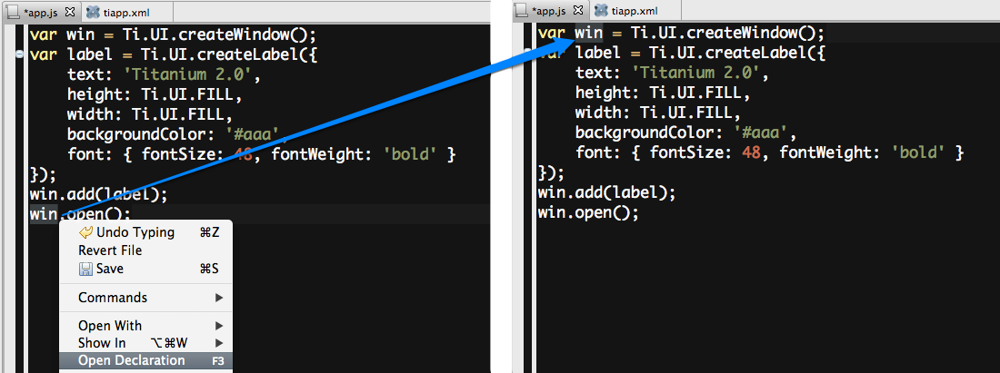
Quick Access Project Analytics
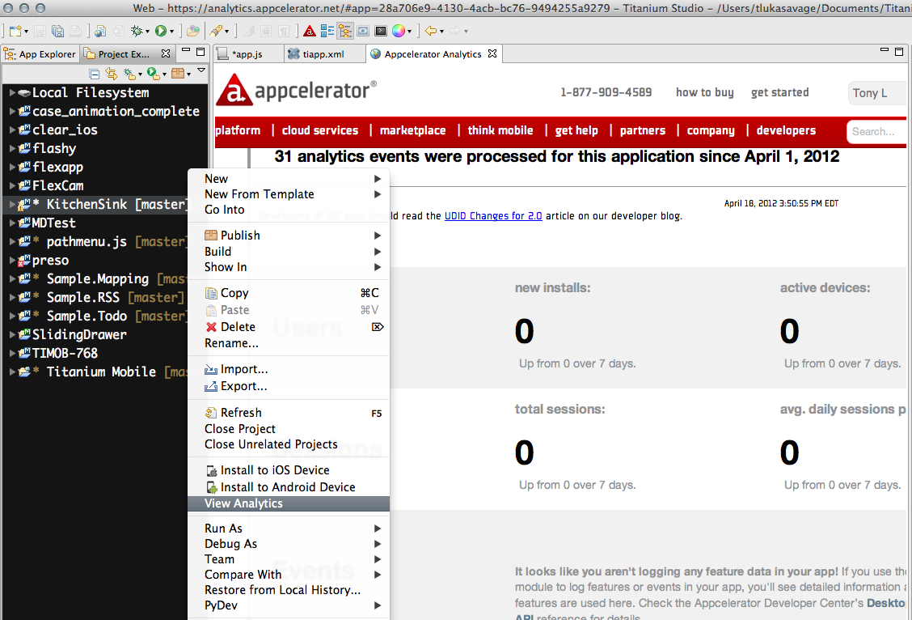More Notable Changes
- XCode 4.3 Support
- Studio 2.0 is now built on top of Eclipse 3.7.2
- Faster project indexing and validation
- More intuitive iOS and Android distribution wizards
- Custom launch arguments for emulators and simulators
Resources
Q & A